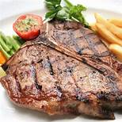
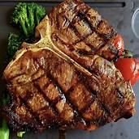
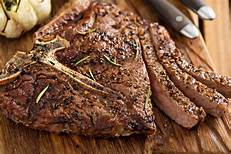

The T-bone and porterhouse are steaks of beef cut from the short loin (called the sirloin in Commonwealth countries and Ireland). Both steaks include a "T"-shaped lumbar vertebra with sections of abdominal internal oblique muscle on each side. Porterhouse steaks are cut from the rear end of the short loin and thus include more tenderloin steak, along with (on the other side of the bone) a large strip steak. T-bone steaks are cut closer to the front, and contain a smaller section of tenderloin. The smaller portion of a T-bone, when sold alone, is known as a filet mignon (called fillet steak in Commonwealth countries and Ireland), especially if cut from the small forward end of the tenderloin.
T-BONE SLIME R125
WIKI STEAK R145
T-BONE BURNET R125
